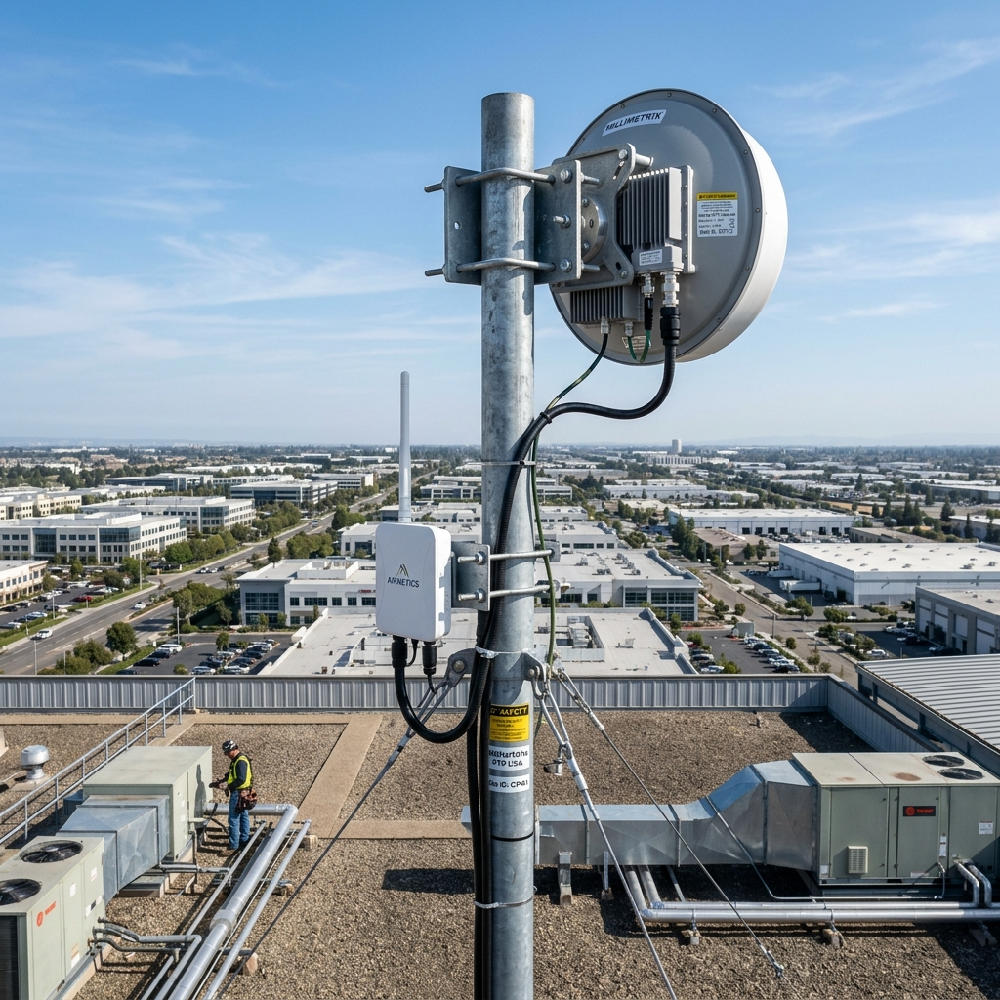

Industrial Wireless Point-to-Point: 2026 60GHz & 5GHz Backup Bridges

1. Executive Summary: The Wireless Gigabit Imperative
Connecting sprawling industrial logistics parks, multi-building corporate campuses, agricultural estates, and remote surveillance perimeters requires deploying high-capacity, multi-gigabit network backhauls. While trenching dedicated single-mode optical fiber between physical buildings represents the gold standard for bandwidth and reliability, civil engineering realities frequently render fiber deployments operationally or economically impossible. Trenching across public roadways, navigating protected environmental wetlands, or tearing up active airport runways introduces immense capital expenditure, protracted municipal permitting delays, and severe operational disruption.
For decades, enterprise network architects deployed legacy 5 GHz wireless point-to-point (PTP) bridges to bypass civil trenching. However, in modern 2026 enterprise environments, legacy 5 GHz bridges represent a critical operational bottleneck. Operating within heavily congested unlicensed spectrum, 5 GHz radios are subjected to massive co-channel interference from municipal Wi-Fi grids, automated weather radar systems (DFS), and industrial telemetry transceivers, limiting real-world throughput to a highly volatile `300 to 500 Mbps`. This restricted bandwidth is completely incapable of sustaining modern enterprise workloads, such as uncompressed 4K IP surveillance streams, centralized SAN storage replication, and high-density VoIP trunking.
```
+------------------------+-----------------------------------+-----------------------------------+
| RF Engineering Metric | Legacy 5 GHz PTP Bridge | 2026 60GHz / 5GHz Hybrid Bridge |
+------------------------+-----------------------------------+-----------------------------------+
| Operating Frequency | 5 GHz (Heavily Congested) | 60 GHz Millimeter-Wave (Pristine) |
| Real-World Throughput | 300 - 500 Mbps (Half-Duplex) | 2.5 Gbps - 10 Gbps (Full-Duplex) |
| Beamwidth Geometry | Broad (15° - 30° / High RF Bleed) | Narrow (<2° Pencil Beam / Secure) |
| Weather Vulnerability | Unaffected by Rain / Atmospheric | Oxygen Absorption & Heavy Rain Att|
| Failover Architecture | Standalone Single Radio | Automated Hitless 5 GHz Backup |
+------------------------+-----------------------------------+-----------------------------------+
```
This comprehensive architectural guide establishes the definitive 2026 engineering standards for industrial wireless point-to-point bridges. Senior RF engineers, network directors, and infrastructure architects will explore the advanced millimeter-wave propagation physics, Fresnel zone clearance mechanics, and automated hitless failover topologies required to deploy carrier-grade wireless backhauls capable of delivering fiber-equivalent 10 Gbps full-duplex throughput.
2. 60 GHz Millimeter-Wave Physics & Oxygen Absorption
Achieving multi-gigabit over-the-air data transmission requires migrating from traditional microwave spectrum into the millimeter-wave (mmWave) band, specifically the unlicensed `60 GHz` V-Band spectrum (`57 GHz to 71 GHz`).
```
+-------------------------------------------------------------------+
| 60 GHz Millimeter-Wave Atmospheric Oxygen Absorption Curve (V-Band)|
+-------------------------------------------------------------------+
| Attenuation (dB/km) |
| ^ |
| | [ 60 GHz Oxygen Absorption Peak: 16 dB/km ] |
| | / \ |
| | / \ |
| | / \ |
| | / \ |
| | (5 GHz: ~0 dB/km) (70 GHz: ~0.5 dB/km) |
| +--------------+--------+---------+--------+-------------------->|
| 0 10 57 60 71 Frequency
+-------------------------------------------------------------------+
```
Atmospheric Oxygen Absorption Mechanics
Operating at 60 GHz introduces highly unique atmospheric attenuation physics. At exactly `60 GHz`, the physical wavelength of the electromagnetic energy (`~5mm`) perfectly matches the molecular resonant frequency of atmospheric oxygen (`O2`). When a 60 GHz signal radiates through open air, atmospheric oxygen molecules actively absorb the electromagnetic energy, converting the RF signal into microscopic mechanical heat vibrations.
This phenomenon, known as Oxygen Absorption, introduces a massive, unavoidable atmospheric attenuation penalty of approximately `16 dB per kilometer`. While this aggressive decibel loss severely restricts the maximum operational range of 60 GHz bridges (typically clamping effective distances to `1.5km to 3km`), it provides an immense, unparalleled engineering advantage: Frequency Re-Use.
Because the signal attenuates so rapidly in the atmosphere, a 60 GHz wireless bridge deployed on Building A will not bleed over-the-air interference into an identical 60 GHz bridge deployed on Building B just two kilometers away. This allows RF engineers to deploy dense, co-located arrays of multi-gigabit wireless bridges across a single corporate campus without introducing self-induced co-channel interference.
Rain Fade Attenuation Physics
While oxygen absorption establishes a static baseline attenuation penalty, millimeter-wave links are highly vulnerable to dynamic weather anomalies, specifically Heavy Rain Fade.
```
+------------------------+-----------------------------------+-----------------------------------+
| Rainfall Rate (mm/hr) | Meteorological Classification | 60 GHz Rain Fade Attenuation Rate |
+------------------------+-----------------------------------+-----------------------------------+
| 5 mm/hr | Light Rain | ~2 dB/km Loss |
| 25 mm/hr | Moderate Rain | ~8 dB/km Loss |
| 50 mm/hr | Heavy Torrential Storm | ~18 dB/km Loss |
| 100 mm/hr | Extreme Cloudburst / Monsoon | ~30+ dB/km Loss (Severe Link Drop)|
+------------------------+-----------------------------------+-----------------------------------+
```
Because physical raindrops are roughly identical in size to the 5mm wavelength of a 60 GHz signal, heavy precipitation scatters and absorbs the traveling RF energy. During a torrential cloudburst (`100 mm/hr`), rain fade can introduce an additional `30+ dB/km` of signal attenuation. RF engineers must meticulously calculate Link Budget Fade Margins during the predictive design phase, ensuring the bridge hardware possesses sufficient transmit power and antenna gain headroom to sustain multi-gigabit forwarding during extreme weather events.
3. Fresnel Zone Clearance Physics & Mast Rigidity Mechanics
Deploying a carrier-grade wireless point-to-point bridge requires maintaining absolute line-of-sight (LOS) integrity. However, true optical line of sight is not sufficient for wireless propagation; RF engineers must ensure the surrounding three-dimensional elliptical space—the Fresnel Zone—remains entirely free of physical obstructions.
```
+-------------------------------------------------------------------+
| Fresnel Zone Elliptical RF Propagation Geometry |
+-------------------------------------------------------------------+
| |
| [PTP Bridge A] [PTP Bridge B] |
| \ .---. .---. .---. / |
| \ . ' ' . / |
| \ / (=== Direct LOS ===) \ / |
| \==== | ---------------*---------------- | ===/ |
| \ ( 60% Clearance ) / |
| . . . . |
| ' - . _ _ . - ' |
| /\ ` --- ` /\ |
| / \ ( Tree Obstruction inside 60% Zone ) / \ |
+-------------------------------------------------------------------+
```
Fresnel Zone Geometry & Obstruction Physics
As an electromagnetic wave travels between two directional bridge antennas, the expanding RF energy forms an elongated, football-shaped elliptical boundary known as the First Fresnel Zone.
```
Fresnel_Radius_meters = 17.32 * sqrt((Distance_km) / (4 * Frequency_GHz))
```
If physical obstructions—such as growing tree canopies, new building construction, or street lighting poles—penetrate into the First Fresnel Zone, the traveling RF waves strike the obstruction and reflect off-phase. These out-of-phase reflections collide with the primary direct wave at the receiving antenna, causing destructive multipath interference that severely degrades link capacity and introduces massive packet jitter. 2026 RF engineering standards strictly mandate that at least `60% of the First Fresnel Zone` must remain completely free of physical obstacles along the entire transmission path.
Structural Mast Rigidity & Pencil-Beam Alignment
Operating at 60 GHz millimeter-wave frequencies requires utilizing high-gain parabolic dish antennas or advanced phased-array antennas that broadcast an incredibly narrow, highly concentrated "Pencil Beam" (typically possessing a beamwidth of `<2 degrees`).
```
+------------------------+-----------------------------------+-----------------------------------+
| Mechanical Parameter | Legacy 5 GHz Parabolic Antenna | 2026 60 GHz mmWave Pencil Beam |
+------------------------+-----------------------------------+-----------------------------------+
| Antenna Beamwidth | 15° to 30° (Broad coverage) | <2° (Hyper-narrow pencil beam) |
| Alignment Tolerance | Forgiving (±5° mechanical sway) | Unforgiving (±0.5° structural sway)|
| Mounting Infrastructure| Standard J-Arm / Wall Bracket | Heavy Galvanized Steel Mast + Guy |
| Wind Load Vulnerability| Low impact on link stability | High risk of link drop without guy|
+------------------------+-----------------------------------+-----------------------------------+
```
Because the RF beam is exceptionally narrow, mechanical alignment tolerances are unforgiving. A minor physical shift of just `0.5 degrees` at the mounting mast can cause the pencil beam to completely miss the receiving antenna located two kilometers away, resulting in total link failure.
Consequently, 2026 installation standards mandate the deployment of heavy-duty, galvanized steel mounting masts secured with rigid structural guy-wires. Engineers must execute meticulous wind-load calculations, ensuring the mounting infrastructure can withstand `100+ mph gale-force winds` without experiencing mechanical twisting or deflection.
4. Automated Hitless 5 GHz Backup Failover Architecture
To guarantee 100% operational availability during catastrophic weather events where torrential rain fade temporarily collapses the primary 60 GHz millimeter-wave link, enterprise architectures mandate the deployment of Hybrid Dual-Band PTP Bridges featuring Automated Hitless Failover.
```
+-------------------------------------------------------------------+
| Hybrid 60GHz / 5GHz Automated Hitless Failover Architecture |
+-------------------------------------------------------------------+
| |
| +---------------------------+ +---------------------------+ |
| | PTP Bridge A (Rooftop) | | PTP Bridge B (Rooftop) | |
| +---------------------------+ +---------------------------+ |
| | | | | |
| | (Primary 60 GHz mmWave Link: 10 Gbps Full-Duplex)| |
| |<=================================================>| |
| | | |
| | (Secondary 5 GHz Backup Link: 500 Mbps Failover) | |
| |<------------------------------------------------->| |
| | | |
| [ L2/L3 Carrier Link Balancing & Sub-Second Failover Engine ] |
+-------------------------------------------------------------------+
```
Sub-Second Carrier Link Balancing
Modern carrier-grade wireless bridges (such as the Siklu EtherHaul series or Ubiquiti airFiber 60 HD) integrate a high-capacity 60 GHz primary radio co-located alongside an independent, secondary 5 GHz backup radio within a single architectural enclosure. The bridge's internal carrier-grade switching silicon continuously monitors the bi-directional frame loss, decibel SNR, and modulation coding scheme (MCS) across the primary 60 GHz link.
```
+-------------------------------------------------------------------+
| Automated Hitless Failover & QoS Traffic Shedding Workflow |
+-------------------------------------------------------------------+
| 1. Torrential cloudburst initiates at 15:30 (100 mm/hr rain) |
| 2. 60 GHz mmWave link experiences 30dB rain fade; SNR drops < 15dB|
| 3. Bridge silicon executes sub-second hitless failover (<20ms) |
| 4. Active data traffic shunted instantly to secondary 5 GHz radio |
| 5. 5 GHz capacity clamped to 500 Mbps; Bridge engages QoS rules |
| 6. Priority VoIP & 4K CCTV streams maintained flawlessly |
| 7. Low-priority background SAN replication throttled / dropped |
| 8. Storm clears at 16:15; 60 GHz link restores & traffic returns |
+-------------------------------------------------------------------+
```
When a severe cloudburst moves across the transmission path, rain fade degrades the 60 GHz signal. As the SNR approaches critical failure thresholds, the bridge's internal switching engine executes an automated, sub-second "Hitless Failover" (`<20 milliseconds`).
Active data traffic is shunted instantly onto the secondary 5 GHz backup radio. Because 5 GHz wavelengths (`~60mm`) are significantly larger than falling raindrops, the backup radio cuts through the torrential storm with zero rain fade attenuation, maintaining an unbroken, reliable communications link between the two buildings.
QoS Traffic Shedding & Bandwidth Governors
When the bridge executes a failover from the primary 10 Gbps 60 GHz link down to the secondary 500 Mbps 5 GHz backup link, an immediate 95% bandwidth collapse occurs. If the bridge attempts to push the full 10 Gbps enterprise workload across the 500 Mbps backup pipe, catastrophic buffer exhaustion and massive packet drops will instantly crash the network.
To manage this transition, network architects must configure rigid Quality of Service (QoS) Traffic Shedding governors within the bridge management plane. The bridge inspects incoming Layer 2 802.1p CoS tags and Layer 3 DSCP headers. During a failover event, the bridge autonomously sheds all low-priority traffic (such as background SAN storage replication, guest Wi-Fi access, and large file downloads).
The entire 500 Mbps capacity of the 5 GHz backup link is reserved exclusively for mission-critical, high-priority traffic queues—specifically real-time VoIP telephony trunks, active Active Directory authentication packets, and uncompressed 4K IP security camera streams. Once the storm clears and the 60 GHz link fully restabilizes, the bridge autonomously restores the primary 10 Gbps pipe and resumes normal, uncapped data forwarding.
5. Comprehensive Expert Frequently Asked Questions
Why does atmospheric oxygen absorption at 60 GHz provide an operational advantage for enterprise wireless bridges?
Operating at exactly 60 GHz introduces highly unique atmospheric attenuation physics where the 5mm physical wavelength perfectly matches the molecular resonant frequency of atmospheric oxygen (`O2`). Oxygen molecules actively absorb the RF energy, introducing a massive attenuation penalty of ~16 dB/km that restricts maximum operational range to 1.5km - 3km. However, this aggressive decibel loss provides an immense operational advantage: Frequency Re-Use. Because the signal attenuates so rapidly in the atmosphere, a 60 GHz bridge on Building A will not bleed interference into an identical 60 GHz bridge on Building B just two kilometers away, allowing engineers to deploy dense arrays of co-located multi-gigabit bridges across a single campus without co-channel interference.
How does heavy rain fade impact 60 GHz millimeter-wave links, and how do Link Budget Fade Margins mitigate it?
Heavy rain fade is a dynamic weather anomaly that severely impacts millimeter-wave links because physical raindrops are roughly identical in size to the 5mm wavelength of a 60 GHz signal, causing falling precipitation to scatter and absorb the traveling RF energy. During a torrential cloudburst (`100 mm/hr`), rain fade can introduce an additional `30+ dB/km` of signal attenuation. RF engineers mitigate this by calculating meticulous Link Budget Fade Margins during the predictive design phase, ensuring the bridge hardware possesses sufficient transmit power (EIRP) and high-gain parabolic dish antennas to maintain the necessary SNR headroom to sustain multi-gigabit forwarding during extreme storms.
What is the First Fresnel Zone and why must 60% of it remain completely free of physical obstructions?
The First Fresnel Zone is an elongated, football-shaped elliptical boundary of expanding RF energy formed between two directional bridge antennas. If physical obstructions—such as growing tree canopies, new building construction, or street lighting poles—penetrate into this zone, the traveling RF waves strike the obstruction and reflect off-phase. These out-of-phase reflections collide with the primary direct wave at the receiving antenna, causing destructive multipath interference that severely degrades link capacity and introduces massive packet jitter. 2026 RF engineering standards strictly mandate that at least 60% of the First Fresnel Zone must remain completely free of physical obstacles along the entire transmission path.
How does Automated Hitless Failover maintain 100% network availability during severe 60 GHz rain fade events?
Modern carrier-grade hybrid wireless bridges integrate a high-capacity 60 GHz primary radio co-located alongside an independent, secondary 5 GHz backup radio within a single enclosure. The bridge's internal switching silicon continuously monitors frame loss and decibel SNR across the primary link. When a severe cloudburst causes massive rain fade on the 60 GHz signal, the bridge executes an automated, sub-second "Hitless Failover" (`<20ms`), shunting active data traffic instantly onto the secondary 5 GHz radio. Because 5 GHz wavelengths (`~60mm`) are significantly larger than raindrops, the backup radio cuts through the torrential storm with zero rain fade attenuation, maintaining an unbroken communications link.
Why is QoS Traffic Shedding mandatory when a hybrid wireless bridge executes a failover to the 5 GHz backup link?
When a hybrid wireless bridge executes a failover from the primary 10 Gbps 60 GHz link down to the secondary 500 Mbps 5 GHz backup link, an immediate 95% bandwidth collapse occurs. If the bridge attempts to push the full 10 Gbps enterprise workload across the 500 Mbps backup pipe, catastrophic buffer exhaustion and massive packet drops will instantly crash the network. Network architects configure rigid Quality of Service (QoS) Traffic Shedding governors; during failover, the bridge autonomously sheds low-priority traffic (background SAN replication, guest Wi-Fi), reserving the entire 500 Mbps capacity exclusively for mission-critical VoIP telephony, Active Directory authentication, and 4K CCTV streams.